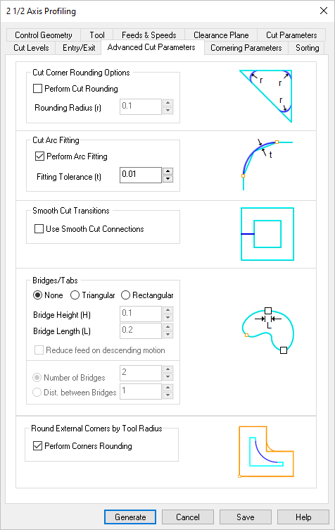
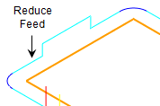

The following Advanced Cut Parameters are similar for the Mill operations where the tab is available. Some parameters listed below may not be supported for every applicable operation. These parameters can be used to control the cuts for high speed machining and are designed to reduce rapid acceleration and deceleration of the machine during the cutting process. They allow smoothing of the toolpaths by introduction of arcs.
|
 Dialog Box: Advanced Cut Parameters tab, Milling Operations |
Check this box to round sharp corners in the toolpath and specify a Rounding Radius (r). Fillets of the specified radius will be introduced in sharp corners if possible. These fillets will only be introduced on planes parallel to the XY plane.
|
Check this box to Perform Arc Fitting . The system will attempt to fit arcs along the computer toolpath if they lie within the three principal planes (XY Plane, XZ Plane or YZ Plane).
|
Check this box to add "S" or "C" shaped cut transitions between two successive offset cuts that lie parallel to the XY plane. These Smooth Cut Connections reduce rapid acceleration and deceleration on the machine and extend tool life.
|
For the 2½ Axis Profiling operations, select None, Triangular or Rectangular to create bridges along the part boundary. These bridges can be used to hold the part on the table during the actual machining operation. The following parameters are supported:
•Bridge Height (H): See illustrations below. •Bridge Length (L): See illustrations below. •Reduce feed on descending motion: Check this box to reduce the feed rate for the descending motion after each tab. The reduction is governed by the Plunge between levels percentage value defined by the Feeds & Speeds tab of the operation.  Reduce Feed when Descending
•Number of Bridges: See note 1 below. •Distance between Bridges: See note 1 below. Notes: 1.Used for automatic placement of tabs. This parameter is ignored if the Control Geometry is a Pre-Defined Region with Bridge Points. 2.For information on creating bridge points, see Automatic Bridge Points on Selections and Manual Bridge Points on Selections.
|
Check this box to round any external corners in your control geometry automatically. The rounding radius equals the active tool radius. "External" depends on which side of the control geometry the tool is moving. The illustrations below shows an external corner when the tool is traveling along the inner side of the control geometry. This is helpful when cutting inlay pockets and profiles.
|